Spreix Platform
On this page
Recommendation: Largest team-product upside and largest scope risk.
On a small screen, swipe horizontally to read every column.
| Snapshot | Assessment |
|---|---|
| Supplied location ID | spreix-platform |
| Product family | Team knowledge |
| Implementation stage | Consolidated implementation; deployment unverified |
| Review date | 2026-09-26 |
| Local state | clean |
Vision and the problem it addresses
Unify capture, compiled team memory and useful actions into a multi-tenant work system: meetings and documents become cited knowledge, decisions and controlled agent runs.
Who needs it: Teams that repeatedly need shared context across meetings, projects and tools; admins managing scoped knowledge and actions.
The moment it becomes useful: Notetakers, wikis and automations are separate. Teams lose provenance when information moves between them, and repeatedly rebuild context before acting.
How it works

This diagram summarizes the inspected design. It is not evidence of a successful end-to-end deployment. For a hands-on journey, use the onboarding guide.
How well it addresses the problem
- The inspected agent worker wires a real runAgent implementation, persistent memory, checkpoints, outputs and realtime events.
- External tool discovery is best-effort and the agent definition still narrows its allowed tool belt.
- The codebase contains extensive router/worker/package tests and explicit org/brain scope concepts. This is not just the design plan described by the opening README.
These are implementation strengths. Repeated use, customer demand and measured business outcomes remain separate questions.
What is missing or unproven
- README has materially stale architecture: it says design-only and Aurora while later text/AGENTS describes standard Postgres/Neon and source contains implemented workers.
- An external-tool discovery failure silently degrades to core tools after logging; users need to understand which capability was unavailable.
- Ported code does not guarantee feature parity. Auth, provenance, schema and event semantics differ among the source products.
- No fresh cloud deployment or full product acceptance pass was done here. Historical AGENTS deployment gaps may themselves be stale; resolve against the current runbook and real environment.
Smallest useful next step
Pick one paid workflow: meeting decision to living project brief to approved task. Establish the canonical knowledge store and cut the launch surface to that loop before adding more channels.
Acceptance exercise: Use two fixture organizations, replay a source event, run an agent with one allowed and one forbidden tool, interrupt/resume from a checkpoint, and validate every resulting artifact’s source lineage and tenant scope. Then run the same test against a deployed dev stage.
This is a proposed validation exercise unless explicitly recorded as executed in VALIDATION.
Position in the portfolio
Related work: Spreix Meeting Intelligence, Cortex / compiled wiki, Spreix Brain, Spreix Company Brain, Lumen.
Read the overlap and integration decisions before merging features. Shared vocabulary does not guarantee shared IDs, permissions, storage or lifecycle semantics.
On a small screen, swipe horizontally to read every column.
| Reviewer judgment, 1–5 | Score |
|---|---|
| Effort to a credible narrow pilot | 4 |
| Potential breadth and recurrence of the need | 5 |
| Integration, operational and consequence exposure | 5 |
These are ordinal planning judgments, not completion percentages or a commercial valuation. Empty/archive projects should be parked rather than treated as active bets.
Evidence and next reading
Source references and snapshot limits · Developer / Claude onboarding · Portfolio synthesis